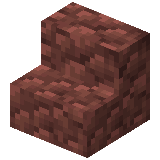

About
Bauxite is a block of sedimentary rock, found in large pockets underground in the badlands biome.
Bauxite slabs are the slab variant of bauxite.
Bauxite stairs are the stairs variant of bauxite.
Bauxite walls are the stairs variant of bauxite.
Click here to view all bauxite brick variants.
Natural generation
Bauxite generates in badlands biomes. These include the badlands, eroded badlands, and wooded badlands biomes.
Any biomes added to the c:is_badlands tag are also supported.
Crafting Recipe


Craft two bauxite in a crafting table by placing a terracotta block and a granite block in any arrangement.
Usage
Collapse Crafting Recipes

Craft four bauxite bricks by placing bauxite in a two-by-two square in a crafting table.
Craft six bauxite slabs in a crafting table by placing three bauxite blocks in a single row.
Craft four bauxite stairs in a crafting table by arranging the blocks in a staircase pattern.
Craft six bauxite walls in a crafting table by filling the middle and bottom rows with bauxite.

Craft two bauxite slabs by placing a bauxite in a stonecutter.
Craft bauxite stairs by placing bauxite in a stonecutter.
Craft bauxite walls by placing a bauxite in a stonecutter.

Craft two bauxite brick slabs by placing a bauxite in a stonecutter.

Craft bauxite brick stairs by placing bauxite in a stonecutter.

Craft bauxite brick walls by placing a bauxite in a stonecutter.
Technical
Show Configuration
Toggles the availability of bauxite, bauxite stairs, bauxite slabs, and bauxite walls:
- In-Game Screen Name: Enable Bauxite
-
Config File Key:
enable_bauxitetrue/Yes: Enabled (Default)false/No: Disabled and hidden
Bauxite Variants

Stairs

Slab

Wall
Bauxite

| Renewable | Yes (Crafting) |
| Biome | Badlands (Mesas) |
| Stackable | Yes (64) |
| Waterloggable |
|
| Tool | Pickaxe |
| Blast Resistance | 0.3 |
| Hardness | 0.3 |
| Luminous | No |
| Transparent | No |
| Catches fire from lava | No |
| Note block instrument | Bass Drum |
| Sulfur cube archetype | Slow Bouncy |